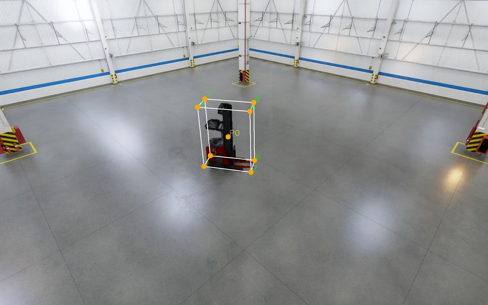
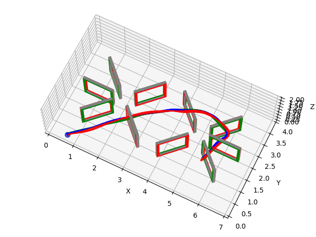

MSE in Robotics
University of Pennsylvania, Philadelphia, USA
Vingroup Scholar
University of Pennsylvania, Philadelphia, USA
Vingroup Scholar
Ho Chi Minh City University of Technology (HCMUT–VNU), Vietnam
Thesis: Integration of an Industrial Robot with a 3D Scanning Stereo Vision System Using Gray Code and Phase Shift
VinRobotics, Hanoi, Vietnam
Leading the RL engineering team and directing production deployment, while developing TACT-ful and CompliantWBC and mentoring 8 interns across locomotion policy design, sim-to-real transfer, and reward engineering.
VinRobotics, Hanoi, Vietnam
Built and cross-validated multi-physics simulation environments (PhysX, MuJoCo, Newton/Warp) and high-throughput distributed GPU RL training pipelines, working with hardware and controls teams to keep policies compatible with real joint controllers, torque limits, and safety constraints.
VinRobotics, Hanoi, Vietnam
Trained RL policies for humanoid locomotion in Isaac Gym and Isaac Lab, using event-driven gait initialization and curriculum learning to reach stable walking, disturbance recovery, and adaptive balancing on hardware.
University of Pennsylvania, Philadelphia, USA
Generated 1M+ synthetic images in NVIDIA Omniverse and improved multi-view pose estimation by 40% through combined synthetic and real-data fine-tuning, enabling perception models accurate to within 30 cm in real warehouse environments.
University of Pennsylvania, Philadelphia, USA
Led lab sessions on multi-view geometry, camera calibration, and image-based reconstruction.
Procter & Gamble, Ho Chi Minh City, Vietnam
Built digital twins and ML models to optimize factory energy consumption.
Vingroup Big Data Institute (VinBigData), Hanoi, Vietnam
Researched depth estimation and built vision-based safety monitoring for construction sites.
Ho Chi Minh City University of Technology, Vietnam
Built structured-light 3D reconstruction and PointNet-based bin-picking segmentation pipelines.
Intel, Ho Chi Minh City, Vietnam
Supported equipment qualification and data analysis for chipset production.

Infrastructure-Based Autonomous Forklift System
Infrastructure-mounted perception combining BEV global localization with FPV local planning to cut onboard sensing and compute needs, with multi-camera calibration and simulation for motion planning and collision checking.
Detection demo → Fleet demo →
Learning in Robotics, University of Pennsylvania
Trained RL policies in custom simulation environments for agile drone navigation under dynamic constraints, investigating sim-to-real policy robustness.
Report → GitHub →Interactive Computer Graphics, University of Pennsylvania
Real-time 3D voxel rendering engine in C++ with a custom OpenGL pipeline, chunk-based procedural terrain, and GLSL shaders for dynamic lighting, shadows, and physically-based materials.
Advanced Topics in Machine Perception, University of Pennsylvania
Visualized Stable Diffusion 3's internal attention structure using Normalized Cuts.